What ShuttleboxR is for
ShuttleboxR helps researchers move from raw shuttle-box recordings to a checked, interpretable project dataset. It follows three steps:
- Import and organise the raw data.
- Calculate shuttle-box metrics consistently.
- Inspect and troubleshoot the data before formal statistical analysis.
The same logic operates at two linked levels:
- Branch 1: a single trial, used to understand one fish in detail.
- Branch 2: the complete project, used to compare all fish and identify trials that deserve closer inspection.
Raw shuttle-box recordings
|
+-- Branch 1: one fish
| import -> calculate -> inspect
|
+-- Branch 2: all fish
compile metrics -> screen the project
|
v
identify fish to review
|
v
return to Branch 1 plotsThe package does not automatically decide that an unusual fish should be excluded. A project-level flag is the beginning of an investigation, not the end of one.
Choose your starting point
The correct import function depends on the structure of the data you already have. ShuttleboxR has three entry points:
| Starting data | Import function | Resulting object | What happens next |
|---|---|---|---|
| One raw ShuttleSoft trial for one fish | read_shuttlesoft() |
fish: time-by-time observations for one trial |
Calculate and inspect that fish |
| A folder of raw ShuttleSoft trials, one file per fish | read_shuttlesoft_project() |
all_fish: a named list of raw trials |
Use calc_project_results() to create
project_data
|
| One existing project-summary CSV, with one row per fish | read_project_database() |
project_data: the project summary table |
Go directly to project-level plots and screening |
Starting point 1: one raw trial file
fish <- read_shuttlesoft(file.choose())Use this route when the file contains the time-by-time ShuttleSoft recording for one fish. The individual-level functions then calculate and inspect that trial.
Starting point 2: a folder of raw trial files
all_fish <- read_shuttlesoft_project(
directory = choose.dir()
)
project_data <- calc_project_results(all_fish)The Windows dialogue created by choose.dir() displays
folders rather than the individual .txt or
.csv files inside them. Navigate to the folder containing
all raw trial files and click Select Folder.
all_fish is a list containing the raw time series for each
fish; project_data is the one-row-per-fish summary table
calculated from those trials.
Starting point 3: an existing project-summary CSV
project_data <- read_project_database(file.choose())Use this route when the CSV already contains one row per fish and
columns such as Tpref, nr_shuttles,
tot_distance and t_near_limits. This route
goes straight to the project-level inspection functions. Do not import a
summary table with read_shuttlesoft() or
read_shuttlesoft_project(), because those functions expect
raw time-series recordings.
One raw fish file -> read_shuttlesoft() -> fish
Folder of raw files -> read_shuttlesoft_project() -> all_fish
|
v
calc_project_results()
|
v
project_data
Existing summary CSV -> read_project_database() -> project_dataAn existing summary file can only provide metrics already stored in
that file. For example, Tbreadth cannot be reconstructed
from Tpref and avoidance temperatures alone; it must either
be present in the summary table or be recalculated from the raw trial
recordings.
The inspection logic
A fish may stand out for several different reasons, and those reasons lead to different follow-up checks.
| Project-level signal | Possible interpretation | Useful single-trial checks |
|---|---|---|
| Very low distance and very few shuttles | Inactivity, poor health, stress, tracking failure, or genuinely sedentary behaviour |
plot_heatmap(), plot_tracking(),
plot_distance()
|
| Many shuttles but little total distance | Repeated doorway crossings, localised movement, or a tracking artefact |
plot_heatmap(), animate_movements(),
plot_tracking()
|
| High distance and high shuttling | High activity, active thermoregulation, or possible agitation/stress |
plot_interval(), plot_speed_coreT(),
plot_heatmap()
|
| Substantial time near the upper limit | Preferred temperatures may exceed the programmed range, or the fish may not be regulating effectively |
plot_T_gradient(), plot_T_segmented(),
plot_coreT_histogram()
|
| Substantial time near the lower limit | Preferred temperatures may fall below the programmed range, or the fish may not be regulating effectively |
plot_T_gradient(), plot_T_segmented(),
plot_coreT_histogram()
|
| Multivariate PCA outlier | An unusual combination of several otherwise plausible metrics | Use PCA arrows and outlier_details to choose the most
relevant single-trial plots |
The same pattern can have different meanings in different species. A low number of shuttles may be normal for a sedentary species, while any sustained exposure to a programmed safety limit is usually more concerning. Exclusion should be based on a documented technical or biological reason, not simply on distance from the project mean.
Branch 1: analyse and inspect one fish
Step 1: import and organise the recording
Select a ShuttleSoft .txt file or .csv
export:
fish <- read_shuttlesoft(file.choose())read_shuttlesoft() imports and prepares the recording.
It creates elapsed seconds and hours, identifies shuttle events,
converts required columns to the expected formats, and labels
acclimation and trial phases when a trial start is provided.
fish <- read_shuttlesoft(
file.choose(),
trial_start = "13:30:00"
)When trial_start is omitted, the complete recording is
treated as trial data. The core_T values already present in
the ShuttleSoft file are retained unless the user explicitly
recalculates them.
This vignette uses a clean, complete example recording included with the package:
example_file <- system.file(
"extdata",
"Fish_14_13_2.txt",
package = "ShuttleboxR"
)
fish <- read_shuttlesoft(example_file)
inspect(fish)
#> [1] "No errors were found in the dataset"Step 2: inspect and calculate gravitation time before summarising thermal behaviour
The first part of a dynamic shuttle-box trial is often a gravitation period. During this transition, the fish moves the system away from its starting conditions and towards the thermal region that it subsequently maintains. Temperatures experienced during this route can pull Tpref towards the starting temperature and can inflate Tbreadth, avoidance percentiles, core-temperature variation, and apparent exposure near the programmed limits.
For that reason, the recommended workflow is:
- view the temperature trajectory with
plot_T_segmented(); - check that the estimated breakpoint is biologically plausible;
- calculate gravitation time once;
- pass that same value to later thermal calculations.
grav_time <- tryCatch(
calc_gravitation(
fish,
exclude_acclimation = FALSE,
print_results = FALSE
),
error = function(e) {
warning(conditionMessage(e))
NA_real_
}
)
segmented_plot <- tryCatch(
plot_T_segmented(
fish,
exclude_acclimation = FALSE,
overlay_chamber_temp = TRUE,
exclude_gravitation = is.finite(grav_time),
gravitation_time = if (is.finite(grav_time)) grav_time else NULL
),
error = function(e) {
ggplot2::ggplot(fish, ggplot2::aes(x = time_h, y = core_T)) +
ggplot2::geom_line() +
ggplot2::labs(
title = "Core body temperature through the example recording",
subtitle = paste("Segmented fit was not estimable:", conditionMessage(e)),
x = "Time (h)", y = "Core body temperature (°C)"
) +
ggplot2::theme_classic()
}
)
segmented_plot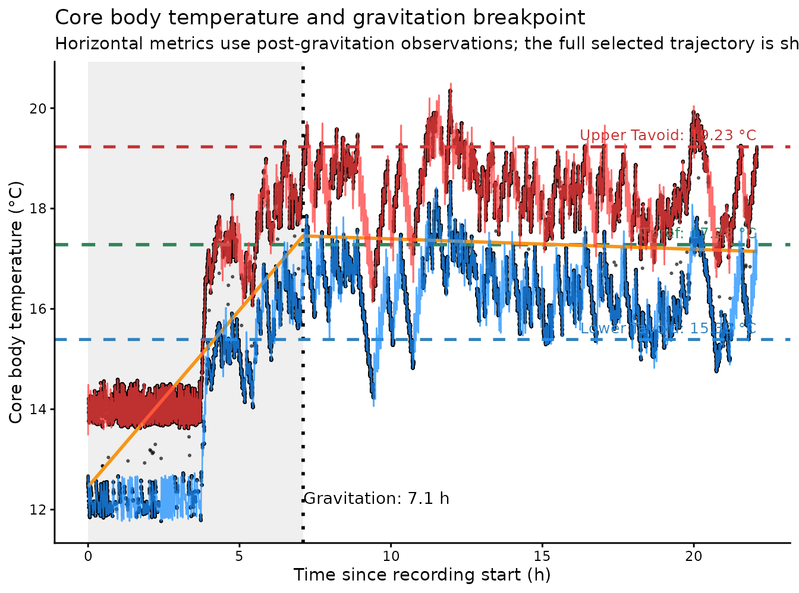
grav_time is a duration, not an
absolute clock time. ShuttleboxR converts it into a cutoff as
follows:
- with
exclude_acclimation = TRUE, cutoff = dynamic-period start + gravitation time; - with
exclude_acclimation = FALSE, cutoff = recording start + gravitation time.
exclude_start_minutes is measured from the same selected
origin. When both a custom starting exclusion and gravitation exclusion
are requested, ShuttleboxR uses whichever cutoff is later; the two
durations are not added together.
A segmented model is a screening tool rather than proof that the fish reached a stable preference. Inspect the plot for an implausible breakpoint, continued directional drift after the breakpoint, chamber-temperature failure, prolonged contact with limits, or too little information after the estimated cutoff. A poorly supported breakpoint should be investigated or supplied manually rather than accepted automatically.
Calculate settled thermal metrics
The following code uses post-gravitation observations when a valid
breakpoint was estimated. Passing the same gravitation_time
to every function prevents small differences caused by repeatedly
fitting the segmented model.
use_settled_window <- is.finite(grav_time)
shared_thermal_args <- list(
data = fish,
exclude_acclimation = FALSE,
exclude_gravitation = use_settled_window,
gravitation_time = if (use_settled_window) grav_time else NULL,
print_results = FALSE
)
Tpref <- do.call(calc_Tpref, shared_thermal_args)
Tavoid <- do.call(calc_Tavoid, shared_thermal_args)
Tpref_range <- Tavoid[2] - Tavoid[1]
Tbreadth <- do.call(calc_Tbreadth, shared_thermal_args)
extremes <- do.call(calc_extremes, shared_thermal_args)
core_T_sd <- calc_coreT_variance(
fish,
variance_type = "std_deviation",
exclude_acclimation = FALSE,
exclude_gravitation = use_settled_window,
gravitation_time = if (use_settled_window) grav_time else NULL
)
# Activity can describe either the complete selected period or settled
# thermoregulation. Here it is retained for the whole recording.
shuttles <- calc_shuttles(fish, print_results = FALSE)
distance <- calc_tot_distance(fish, print_results = FALSE)
tracking <- calc_track_accuracy(fish, print_results = FALSE)
single_results <- data.frame(
metric = c(
"Gravitation time (h)",
"Tpref (°C)",
"Lower Tavoid (°C)",
"Upper Tavoid (°C)",
"Tpref range (°C)",
"Tbreadth (°C)",
"Core-temperature SD (°C)",
"Near lower limit (%)",
"Near upper limit (%)",
"Number of shuttles",
"Total distance (cm)",
"Proportion successfully tracked"
),
value = c(
grav_time, Tpref, Tavoid[1], Tavoid[2], Tpref_range,
Tbreadth, core_T_sd, extremes[1], extremes[2],
shuttles, distance, tracking
)
)
knitr::kable(single_results, digits = 3)| metric | value |
|---|---|
| Gravitation time (h) | 7.100 |
| Tpref (°C) | 17.280 |
| Lower Tavoid (°C) | 15.390 |
| Upper Tavoid (°C) | 19.230 |
| Tpref range (°C) | 3.840 |
| Tbreadth (°C) | 1.452 |
| Core-temperature SD (°C) | 1.261 |
| Near lower limit (%) | 0.000 |
| Near upper limit (%) | 0.000 |
| Number of shuttles | 1576.000 |
| Total distance (cm) | 229782.970 |
| Proportion successfully tracked | 1.000 |
Thermal metrics calculated after gravitation describe the fish’s settled thermal behaviour, rather than the route taken to reach it. This is generally the clearest interpretation for Tpref, Tavoid, Tpref range, Tbreadth, core-temperature variation, and time near limits.
Distance, shuttling, and chamber occupancy are less clear-cut. Keep gravitation when the goal is whole-trial activity, but exclude it when the goal is activity specifically during settled thermoregulation:
calc_shuttles(
fish,
exclude_gravitation = TRUE,
gravitation_time = grav_time
)
calc_tot_distance(
fish,
exclude_gravitation = TRUE,
gravitation_time = grav_time
)Tpref, avoidance temperatures and Tpref range
Tpref is the central selected temperature. The default
calculation is the median core_T, although the mean and
mode are available. Tavoid_lower and
Tavoid_upper are the lower and upper percentiles of the
selected core_T distribution; the defaults are the 5th and
95th percentiles. Their difference, Tpref_range, is
therefore the width of the central 90% of observations.
These metrics describe the centre and percentile boundaries of the distribution, but they do not describe how observations are distributed within those boundaries.
What does Tbreadth mean?
Tpref, Tavoid and Tbreadth
describe different parts of the temperature distribution:
-
Tprefdescribes where the distribution is centred. -
Tavoid_lowerandTavoid_upperdescribe percentile boundaries. -
Tbreadthdescribes how far apart the temperatures experienced by the fish were.
Explain it like I am five
Imagine choosing two moments from the analysed part of the trial and looking at the fish’s core temperature at those moments.
- If the two temperatures are almost the same, their difference is small.
- If the two temperatures are far apart, their difference is large.
Now repeat this for every possible pair of moments and take the
average of all those differences. That average is
Tbreadth.
A fish that stays at almost the same temperature will therefore have a Tbreadth close to zero. A fish that regularly experiences temperatures far apart will have a larger Tbreadth. When gravitation is excluded, this value summarises the spread of the settled temperature distribution rather than including the initial journey from the starting conditions.
The equation
For core-temperature observations :
In words, the function calculates the absolute temperature difference for all pairs of observations and then takes their mean. This is also known as the Gini mean difference. The implementation uses an efficient equivalent calculation, so it does not need to construct an enormous table of every pair.
Worked examples
| Temperature use | Tbreadth | Interpretation |
|---|---|---|
| All observations at 20 °C | 0 °C | Every pair has the same temperature |
| 50% at 20 °C and 50% at 21 °C | 0.5 °C | Half the pairs differ by 1 °C and half by 0 °C |
| 50% at 10 °C and 50% at 20 °C | 5 °C | Half the pairs differ by 10 °C and half by 0 °C |
| 90% at 20 °C and 10% at 30 °C | 1.8 °C | The rare 30 °C observations increase breadth, but most pairs remain near 20 °C |
The 10 °C/20 °C example is important. Its Tbreadth is much larger than that of a fish split between 20 °C and 21 °C because the two occupied parts of the distribution are much farther apart.
What Tbreadth does not tell you
Tbreadth is not centred on Tpref. A
value of 2 °C does not mean Tpref - 1 °C to
Tpref + 1 °C, and it does not define any particular lower
or upper temperature boundary.
It also cannot fully describe histogram shape. Two fish can have the
same Tbreadth even if one has a single broad peak and the other has two
separate peaks. Use the value together with
plot_coreT_histogram():
-
Tbreadthsummarises the overall spread in one number; - the histogram shows whether that spread is narrow, broad, skewed, or multimodal.
Tbreadth is not a measure of physiological thermal
tolerance.
calc_Tbreadth(
fish,
exclude_gravitation = use_settled_window,
gravitation_time = if (use_settled_window) grav_time else NULL,
print_results = FALSE
)
#> [1] 1.452014Step 3: inspect whether the trial is interpretable
Inspection should answer two separate questions:
- Did the apparatus and tracking system work as intended?
- Did the fish show behaviour that can reasonably be interpreted as thermoregulation?
Chamber temperatures and system operation
plot_T_gradient(fish)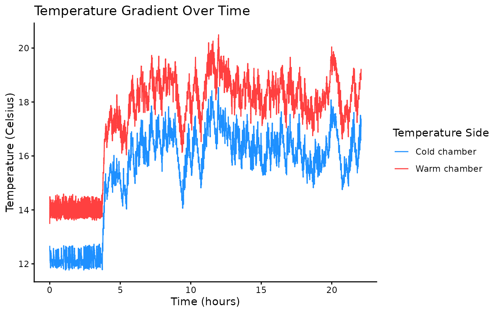
Look for a stable difference between the warm and cold chambers, plausible heating and cooling rates, and no abrupt interruptions or impossible values. A power cut or sensor failure may create a discontinuity that is obvious here but not obvious from a single summary metric.
Revisit the temperature trajectory when interpreting other warnings
The segmented plot above should be revisited whenever a metric appears unusual. For example, a large Tbreadth may reflect a genuinely broad settled distribution, a bimodal pattern, or continued drift after an unreliable breakpoint. A high limit-exposure value may occur mainly during gravitation rather than after the fish settled. The trajectory provides the timing information needed to separate these explanations.
Frequency distribution and thermal breadth
plot_coreT_histogram(
fish,
bin_size = 0.1,
exclude_gravitation = use_settled_window,
gravitation_time = if (use_settled_window) grav_time else NULL
)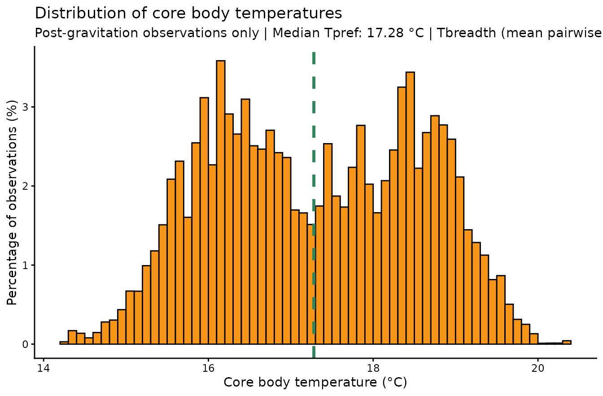
This plot is the visual partner to Tbreadth. Tbreadth increases when
commonly experienced temperatures are farther apart, while the histogram
reveals why. A narrow peak should produce a small Tbreadth. A
broad peak, long tails, or well-separated peaks can increase Tbreadth.
The same Tbreadth can nevertheless arise from different shapes, so
inspect whether the distribution is symmetrical, skewed, or multimodal.
Multiple peaks may represent distinct phases of behaviour and should be
compared with plot_T_segmented() and the full
temperature-through- time record.
The bin_size argument here changes only how the
histogram is drawn. It no longer changes the value calculated by
calc_Tbreadth().
Tracking and spatial behaviour
invisible(capture.output(
tracking_plot <- plot_tracking(fish, interval_minutes = 20)
))
tracking_plot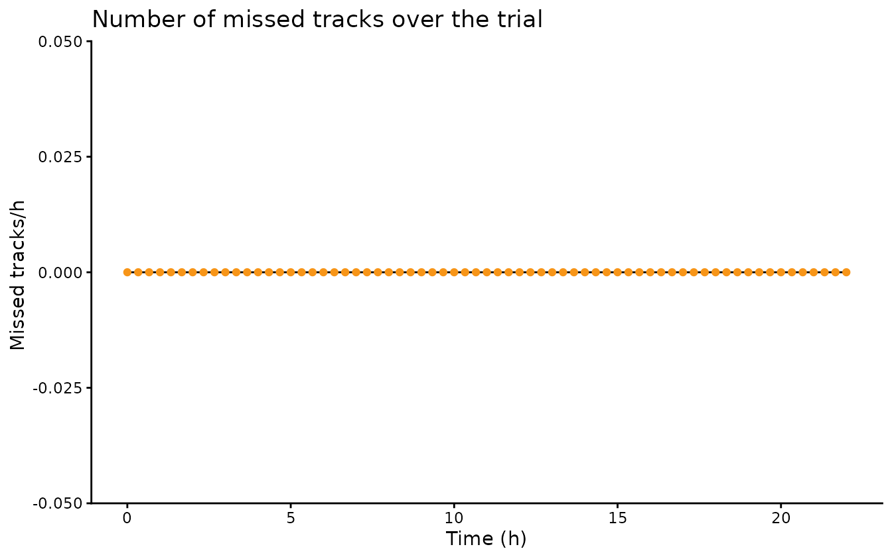
plot_heatmap(fish)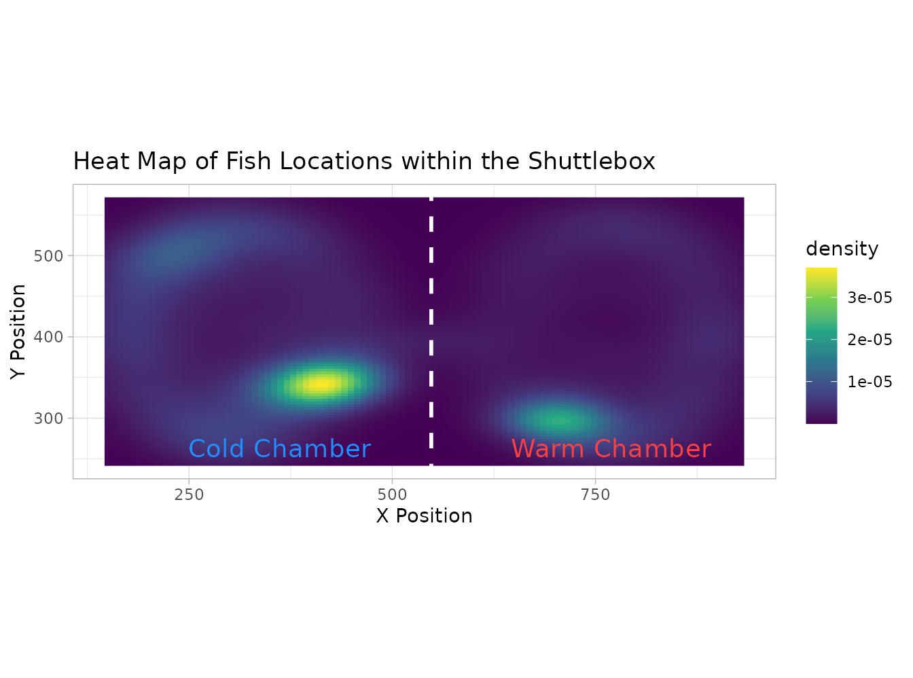
Poor tracking can inflate or suppress distance and may create false shuttles. A heatmap concentrated in one tiny area can indicate inactivity, a tracking lock, or a fish that did not engage with the thermal gradient. A broad heatmap is not automatically better: location should be interpreted alongside chamber occupancy, shuttling, temperature and species ecology.
Branch 2: screen the complete project
Step 1: create or import the project-level summary table
There are two routes into Branch 2.
Route A: start from a folder of raw trial files
Import all raw .txt or .csv recordings from
one folder:
all_fish <- read_shuttlesoft_project(
directory = choose.dir()
)The folder-selection dialogue shows folders rather than individual
files. Select the folder that contains all raw trials. The resulting
all_fish object is a named list containing one time-series
dataset per fish.
Then calculate the same summary metrics for every fish:
project_data <- calc_project_results(
all_fish,
exclude_acclimation = TRUE,
Tpref_method = "median",
Tavoid_percentiles = c(0.05, 0.95),
exclude_gravitation_thermal = TRUE,
exclude_gravitation_activity = FALSE,
gravitation_failure = "warn"
)The resulting project_data object contains one row per
fish and can be passed to all project-level plots and screening
functions. Gravitation is estimated once per fish and the same value is
reused for all thermal metrics. The output also records
gravitation_valid, gravitation_reference,
thermal_metrics_start_h,
activity_metrics_start_h, and whether each metric set was
calculated after gravitation. If a breakpoint cannot be estimated and
gravitation_failure = "warn", gravitation-dependent metrics
are recorded as NA rather than silently reverting to the
full trial.
Route B: start from an existing project-summary CSV
When a CSV already contains one row per fish and the required summary columns, load it directly:
project_data <- read_project_database(file.choose())This route does not use read_shuttlesoft_project() or
calc_project_results(). It is appropriate only for a
summary table, not a raw ShuttleSoft recording. ShuttleboxR cannot infer
from summary values alone whether gravitation was excluded, so imported
project databases should retain analysis-window columns or accompanying
metadata describing how the metrics were calculated.
The package includes an 85-fish example summary database, which is used for the remainder of this vignette:
project_file <- system.file(
"extdata",
"project_database_example.csv",
package = "ShuttleboxR"
)
project_data <- read_project_database(project_file)The example database predates calc_Tbreadth(), so it
does not contain that metric. Tbreadth must be recalculated from the
original time-series data; it cannot be reconstructed from Tpref and
avoidance temperatures alone.
Step 2: begin with univariate distributions
univariate_flags <- plot_histograms(project_data)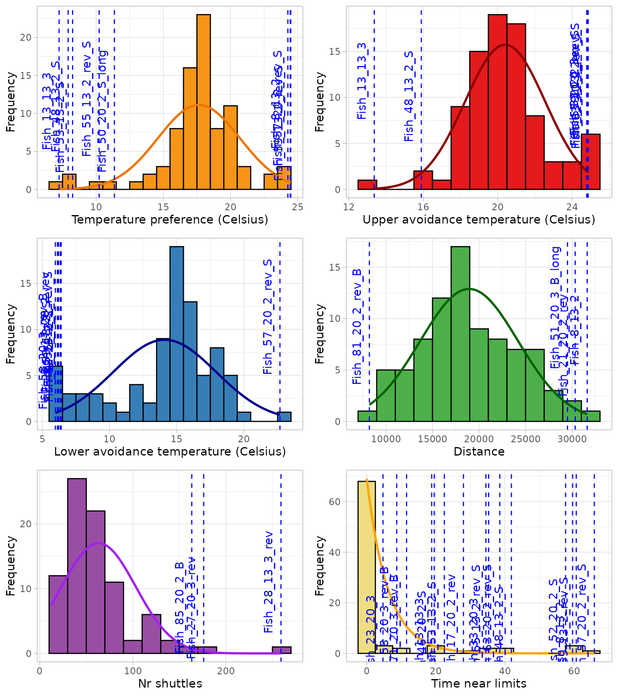
#> TableGrob (3 x 2) "arrange": 6 grobs
#> z cells name grob
#> 1 1 (1-1,1-1) arrange gtable[layout]
#> 2 2 (1-1,2-2) arrange gtable[layout]
#> 3 3 (2-2,1-1) arrange gtable[layout]
#> 4 4 (2-2,2-2) arrange gtable[layout]
#> 5 5 (3-3,1-1) arrange gtable[layout]
#> 6 6 (3-3,2-2) arrange gtable[layout]The returned table identifies fish that are unusual for individual metrics. This is useful for finding, for example, exceptionally low distance, an unusual Tpref or substantial time near limits. A univariate flag does not reveal whether the value is technically invalid or biologically meaningful.
Step 3: inspect upper and lower limit exposure separately
The combined t_near_limits value can conceal whether a
fish repeatedly reached the upper limit, the lower limit, or both. The
separate plot is therefore an important quality-control step.
extreme_review <- plot_upper_vs_lower_extremes(
project_data,
return_cases = TRUE
)
extreme_review$plot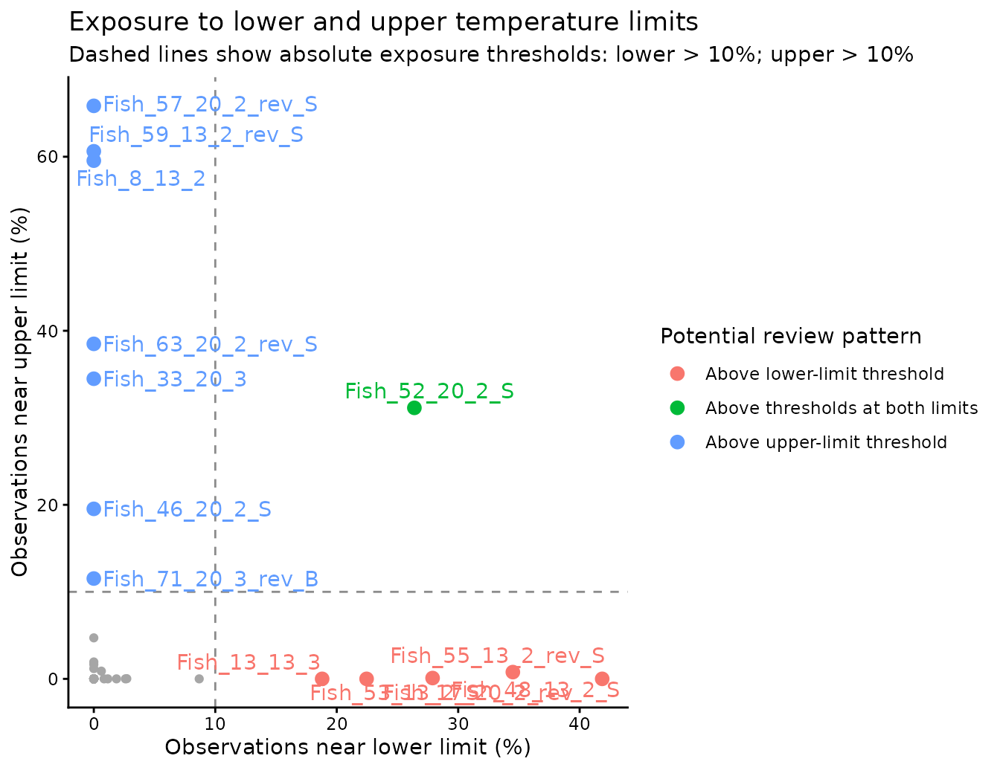
knitr::kable(extreme_review$cases, digits = 2)| fileID | t_near_min | t_near_max | review_reason | |
|---|---|---|---|---|
| 8 | Fish_8_13_2 | 0.00 | 59.55 | Above upper-limit threshold |
| 13 | Fish_13_13_3 | 18.80 | 0.00 | Above lower-limit threshold |
| 17 | Fish_17_20_2_rev | 27.89 | 0.09 | Above lower-limit threshold |
| 33 | Fish_33_20_3 | 0.00 | 34.49 | Above upper-limit threshold |
| 46 | Fish_46_20_2_S | 0.00 | 19.54 | Above upper-limit threshold |
| 48 | Fish_48_13_2_S | 41.86 | 0.00 | Above lower-limit threshold |
| 52 | Fish_52_20_2_S | 26.39 | 31.14 | Above thresholds at both limits |
| 53 | Fish_53_13_2_S | 22.46 | 0.00 | Above lower-limit threshold |
| 55 | Fish_55_13_2_rev_S | 34.50 | 0.78 | Above lower-limit threshold |
| 57 | Fish_57_20_2_rev_S | 0.00 | 65.85 | Above upper-limit threshold |
| 59 | Fish_59_13_2_rev_S | 0.00 | 60.63 | Above upper-limit threshold |
| 63 | Fish_63_20_2_rev_S | 0.00 | 38.50 | Above upper-limit threshold |
| 71 | Fish_71_20_3_rev_B | 0.00 | 11.53 | Above upper-limit threshold |
By default, the dashed lines mark 10% of analysed observations near each limit. This direct percentage threshold is easier to interpret than a project-level IQR rule and remains meaningful when most fish have zero exposure. A point is highlighted only when it exceeds the relevant threshold; any small non-zero value is no longer treated as “high” exposure.
Interpretation:
- Above upper-limit threshold: the fish may prefer warmer conditions than the programmed range permits, or it may have failed to move away from the warm extreme.
- Above lower-limit threshold: the analogous concern at the cold end.
- Above thresholds at both limits: may indicate unusually wide exploration, unstable system behaviour, tracking problems, or settings poorly matched to the species.
The thresholds can be changed explicitly, for example:
plot_upper_vs_lower_extremes(
project_data,
lower_limit_threshold = 5,
upper_limit_threshold = 5
)Project-relative alternatives remain available through
limit_method = "quantile" or
limit_method = "iqr", but these should be used with care in
datasets containing many zero values.
The next checks should be plot_T_gradient(),
plot_T_segmented() and plot_coreT_histogram()
for the flagged fish.
Step 4: use bivariate plots to distinguish different outlier types
A bivariate plot can identify three kinds of cases:
- Marginal outliers: extreme on one axis, such as very low distance.
- Corner cases: extreme on both axes, such as low distance and low shuttling.
- Unusual combinations: values that are individually plausible but form an unexpected combination, such as many shuttles with little total movement.
The optional review guides below use the 5th and 95th project
quantiles for movement and shuttling. By default, limit exposure is
flagged only when more than 10% of analysed
observations occurred near the programmed limits. This absolute
threshold is a transparent starting point, not a universal biological
cutoff, and can be changed with limit_threshold.
The older project-relative approaches remain available with
limit_method = "quantile" or
limit_method = "iqr". The absolute method is the default
because IQR and quantile thresholds can collapse towards zero when most
fish never approach the limits.
Distance versus shuttling
This is a useful first project-level comparison because total distance describes overall activity, whereas the number of shuttles describes movement between the two chambers. The plot can therefore distinguish inactivity from active movement that does not involve thermal regulation.
distance_shuttle_review <- plot_distance_vs_shuttles(
project_data,
highlight_cases = TRUE,
return_cases = TRUE
)
distance_shuttle_review$plot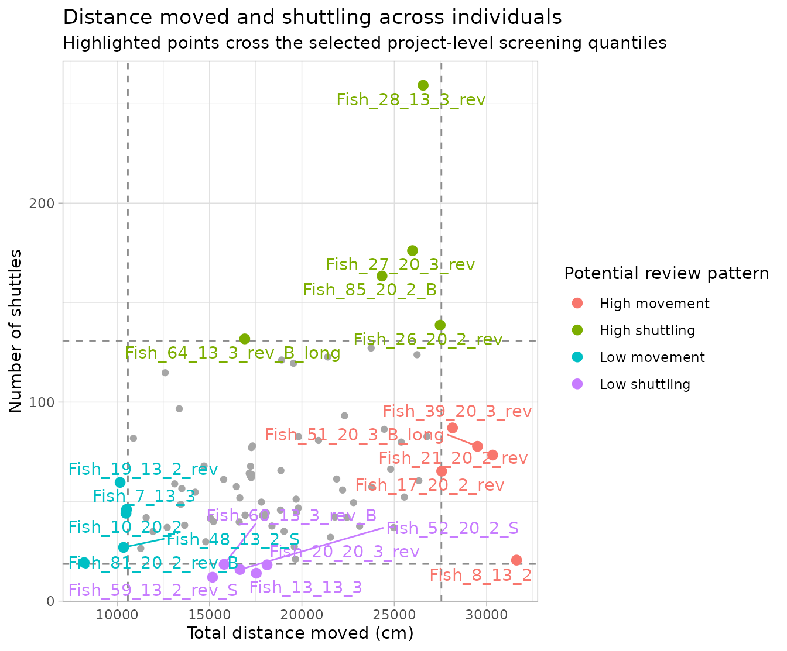
knitr::kable(distance_shuttle_review$cases, digits = 2)| fileID | tot_distance | nr_shuttles | review_reason | |
|---|---|---|---|---|
| 7 | Fish_7_13_3 | 10507.03 | 46.05 | Low movement |
| 8 | Fish_8_13_2 | 31620.00 | 20.58 | High movement |
| 10 | Fish_10_20_2 | 10477.77 | 44.12 | Low movement |
| 13 | Fish_13_13_3 | 17531.82 | 14.00 | Low shuttling |
| 17 | Fish_17_20_2_rev | 27567.84 | 65.30 | High movement |
| 19 | Fish_19_13_2_rev | 10159.01 | 59.62 | Low movement |
| 20 | Fish_20_20_3_rev | 18114.72 | 18.23 | Low shuttling |
| 21 | Fish_21_20_2_rev | 30327.36 | 73.39 | High movement |
| 26 | Fish_26_20_2_rev | 27485.97 | 138.66 | High shuttling |
| 27 | Fish_27_20_3_rev | 25988.91 | 176.11 | High shuttling |
| 28 | Fish_28_13_3_rev | 26563.92 | 259.18 | High shuttling |
| 39 | Fish_39_20_3_rev | 28153.96 | 87.04 | High movement |
| 48 | Fish_48_13_2_S | 10345.62 | 26.98 | Low movement |
| 51 | Fish_51_20_3_B_long | 29504.34 | 77.78 | High movement |
| 52 | Fish_52_20_2_S | 16649.53 | 15.87 | Low shuttling |
| 59 | Fish_59_13_2_rev_S | 15164.25 | 11.99 | Low shuttling |
| 60 | Fish_60_13_3_rev_B | 15790.22 | 18.49 | Low shuttling |
| 64 | Fish_64_13_3_rev_B_long | 16905.61 | 131.76 | High shuttling |
| 81 | Fish_81_20_2_rev_B | 8214.46 | 19.35 | Low movement |
| 85 | Fish_85_20_2_B | 24335.88 | 163.36 | High shuttling |
Particularly useful patterns are:
- Low movement + low shuttling: inspect inactivity and tracking.
- Low movement + high shuttling: inspect the doorway region, false crossings and repeated local movement.
- High movement + low shuttling: the fish may be active within one chamber but not regulating through chamber changes.
- High movement + high shuttling: may represent highly active thermoregulation or agitation.
Limit exposure versus distance
limits_distance_review <- plot_limits_vs_distance(
project_data,
highlight_cases = TRUE,
return_cases = TRUE
)
limits_distance_review$plot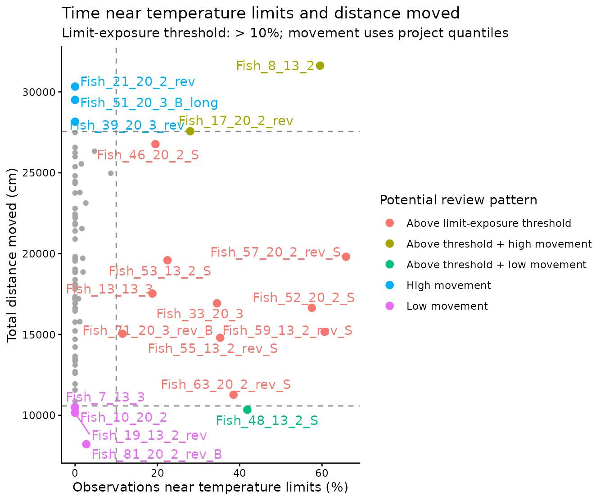
A fish above the limit-exposure threshold with low movement may have remained near a limit without responding. A fish above the threshold with high movement may have been actively searching but unable to reach a suitable temperature, which can indicate that the programmed range was inappropriate.
Limit exposure versus shuttling
limits_shuttles_review <- plot_limits_vs_shuttles(
project_data,
highlight_cases = TRUE,
return_cases = TRUE
)
limits_shuttles_review$plot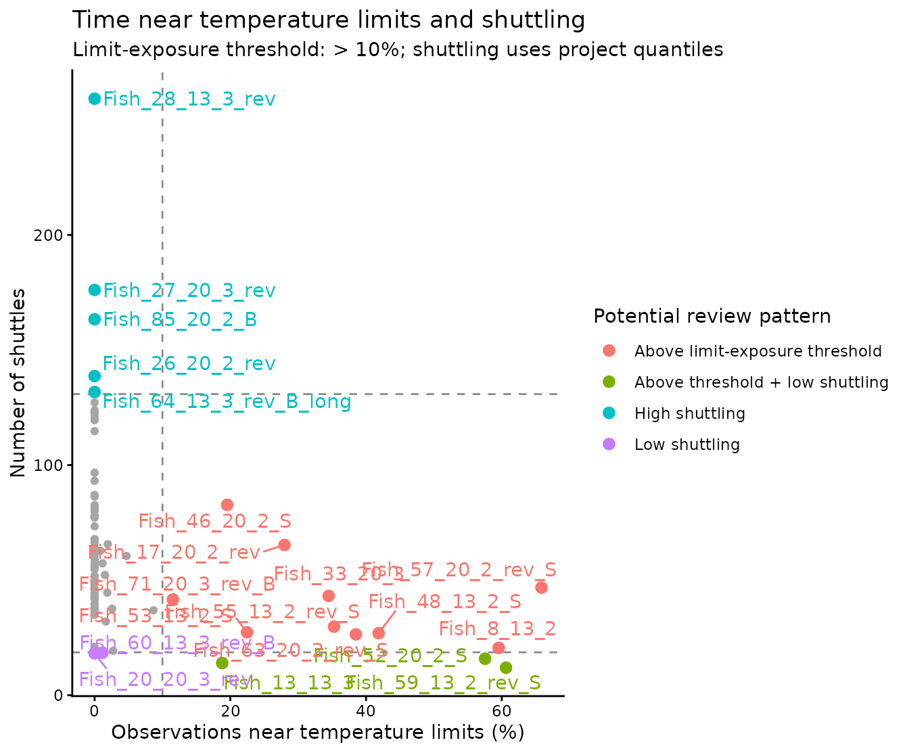
Exposure above the threshold with few shuttles suggests little corrective behaviour. Exposure above the threshold with many shuttles suggests that the fish was responding but the available gradient or limits may not have allowed it to stabilise.
Step 5: view the wider pattern with a bivariate matrix
The targeted plots above are best for identifying and labelling particular fish. A bivariate matrix provides a wider overview by displaying every pairwise relationship among a selected set of project metrics in one figure.
project_correlations <- correlation_matrix(
project_data,
columns = c(
"Tpref",
"Tpref_range",
"grav_time",
"tot_distance",
"nr_shuttles",
"t_near_limits"
)
)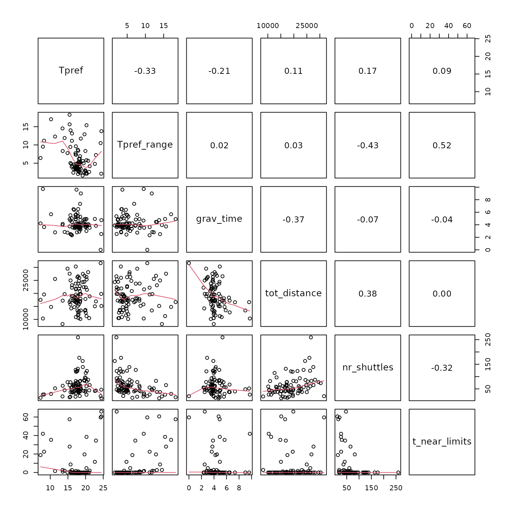
Read the matrix as follows:
- Variable names appear along the diagonal.
- The lower panels show the individual fish and a smooth trend for each pair of metrics.
- The upper panels show the Pearson correlation coefficient. Values near 1 or -1 indicate strong positive or negative relationships; values near 0 indicate little linear association.
- A point separated from the main cloud in one lower panel may represent an unusual combination of otherwise plausible measurements.
The matrix is particularly useful for detecting redundant variables before PCA. For example, two strongly correlated metrics can contribute very similar information. It does not label individual fish, so a suspicious relationship should be followed up with the corresponding targeted bivariate plot and then with the original single-trial record.
Step 6: interpret PCA as a map of multivariate behaviour
PCA is useful when no single metric fully explains why a fish is unusual. It compresses correlated metrics into principal components.
Use a deliberately chosen set of variables. Avoid automatically including every numeric column, and avoid including several mathematically redundant variables unless that redundancy is scientifically intended.
project_pca <- pca(
project_data,
variables = c(
"Tpref",
"Tpref_range",
"grav_time",
"tot_distance",
"nr_shuttles",
"t_near_max",
"t_near_min"
),
mahalanobis_th = 0.99,
dbscan_th = 1.5,
dbscan_minPts = 4,
flag_rule = "both",
print_labels = FALSE,
highlight_outliers = TRUE
)
project_pca$plots$screeplot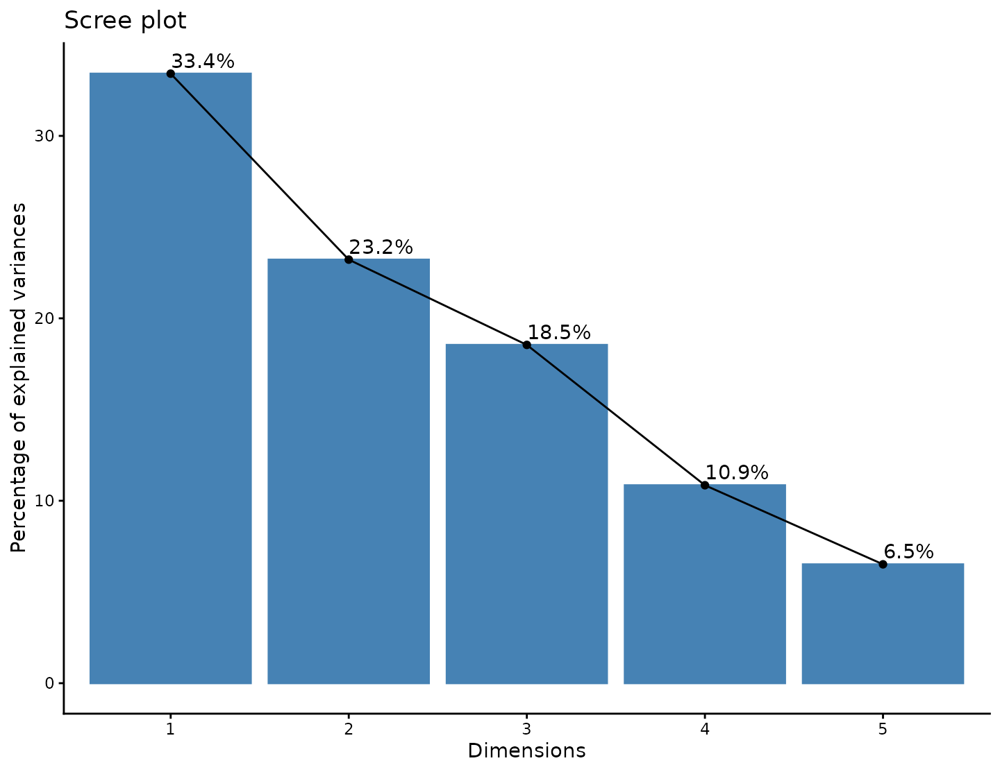
Reading the scree plot
The scree plot shows the percentage of total project variation represented by each principal component. PC1 is the largest single axis of variation, PC2 the next largest, and so on. The PC1-PC2 biplot is only a two-dimensional view. If PC1 and PC2 explain a modest fraction of total variation, fish can be unusual in later components even when they do not appear extreme on the biplot.
project_pca$plots$biplot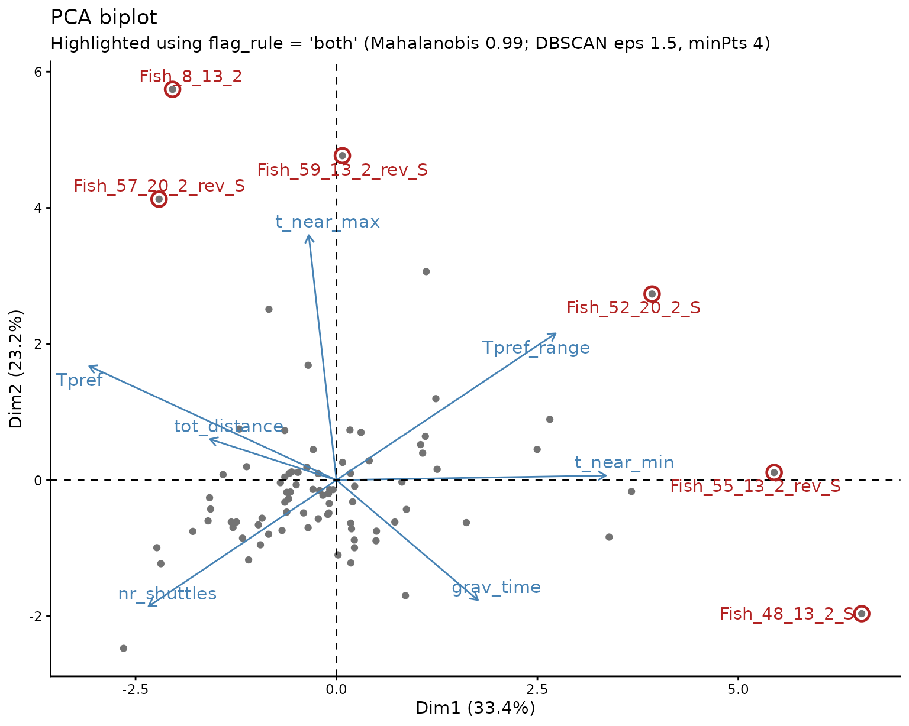
Reading the biplot
- Points close together have similar combinations of metrics.
- Points far apart have different multivariate profiles.
- An arrow points toward increasing values of that metric.
- Longer arrows are represented more strongly in the displayed PC1-PC2 plane.
- Arrows pointing in similar directions indicate positively associated metrics; opposing arrows indicate negative association; near-right angles indicate weak association in this plane.
- A fish lying far in the direction of an arrow is likely to have a relatively high value for that metric. A fish in the opposite direction is likely to have a relatively low value.
Flagged fish are circled and labelled. The arrows suggest what to
inspect next, but outlier_details makes that link more
explicit:
knitr::kable(project_pca$outlier_details, digits = 2)| fileID | methods | flagged | mahalanobis_distance | potential_drivers |
|---|---|---|---|---|
| Fish_8_13_2 | Mahalanobis + DBSCAN | TRUE | 23.41 | t_near_max high (4.2 SD); grav_time low (-3 SD); tot_distance high (2.4 SD) |
| Fish_28_13_3_rev | Mahalanobis | FALSE | 23.43 | nr_shuttles high (4.9 SD); tot_distance high (1.4 SD); Tpref_range low (-1.1 SD) |
| Fish_48_13_2_S | Mahalanobis + DBSCAN | TRUE | 30.77 | t_near_min high (5.2 SD); grav_time high (3.7 SD); Tpref low (-3.2 SD) |
| Fish_49_13_3_B | Mahalanobis | FALSE | 15.22 | grav_time high (3.7 SD); Tpref_range low (-0.7 SD); tot_distance low (-0.4 SD) |
| Fish_52_20_2_S | Mahalanobis + DBSCAN | TRUE | 15.15 | t_near_min high (3.1 SD); Tpref_range high (3 SD); t_near_max high (2.1 SD) |
| Fish_55_13_2_rev_S | Mahalanobis + DBSCAN | TRUE | 16.72 | t_near_min high (4.2 SD); Tpref_range high (2.7 SD); Tpref low (-2.4 SD) |
| Fish_57_20_2_rev_S | Mahalanobis + DBSCAN | TRUE | 21.17 | t_near_max high (4.7 SD); Tpref high (2.2 SD); grav_time low (-1.2 SD) |
| Fish_59_13_2_rev_S | Mahalanobis + DBSCAN | TRUE | 20.63 | t_near_max high (4.3 SD); Tpref high (2.2 SD); Tpref_range high (1.9 SD) |
| Fish_63_20_2_rev_S | DBSCAN | FALSE | 9.33 | t_near_max high (2.6 SD); Tpref_range high (2.3 SD); tot_distance low (-1.5 SD) |
potential_drivers lists the original measurements that
are most unusually high or low for each flagged fish, expressed in
project standard deviations. For example, a fish driven by high
t_near_max should be checked for upper-limit exposure,
whereas one driven by low tot_distance should be checked
for inactivity or poor tracking.
Mahalanobis distance and DBSCAN are complementary
- Mahalanobis distance asks whether a fish is far from the multivariate centre after accounting for correlations among metrics. It uses all retained PCA dimensions, not only the visible biplot.
- DBSCAN asks whether a fish lies in a locally sparse region of the PC1-PC2 map. It can detect isolated points even when the project contains more than one cluster.
Agreement between the methods is a strong reason for closer inspection, but neither method proves invalidity. Disagreement is also informative: a fish can be globally unusual without being locally isolated, or locally isolated without being far from the overall centre.
The thresholds and flagging rule control sensitivity:
- Increasing
mahalanobis_thmakes the Mahalanobis screen more conservative. For example,0.99requires a fish to be farther from the multivariate centre than0.975. - Increasing
dbscan_thallows points farther apart to remain in the same local neighbourhood, and therefore usually reduces the number classified as noise. -
dbscan_minPtssets how many neighbouring points are needed to form a dense region. Its effect depends on sample size and the structure of the data, so it should be checked rather than interpreted in isolation. -
flag_rule = "both"highlights only fish detected by both methods and is the most conservative choice."either"highlights fish detected by at least one method, while"mahalanobis"and"dbscan"use only the named screen.
The method-level detections remain available in
project_pca$outliers. The fish-level table
project_pca$screening shows which method detected each fish
and whether it was selected under the chosen flag_rule:
| fileID | mahalanobis | dbscan | methods | detected_by_both | flagged | flag_rule | mahalanobis_distance | |
|---|---|---|---|---|---|---|---|---|
| Fish_8_13_2 | Fish_8_13_2 | TRUE | TRUE | Mahalanobis + DBSCAN | TRUE | TRUE | both | 23.41 |
| Fish_28_13_3_rev | Fish_28_13_3_rev | TRUE | FALSE | Mahalanobis | FALSE | FALSE | both | 23.43 |
| Fish_48_13_2_S | Fish_48_13_2_S | TRUE | TRUE | Mahalanobis + DBSCAN | TRUE | TRUE | both | 30.77 |
| Fish_49_13_3_B | Fish_49_13_3_B | TRUE | FALSE | Mahalanobis | FALSE | FALSE | both | 15.22 |
| Fish_52_20_2_S | Fish_52_20_2_S | TRUE | TRUE | Mahalanobis + DBSCAN | TRUE | TRUE | both | 15.15 |
| Fish_55_13_2_rev_S | Fish_55_13_2_rev_S | TRUE | TRUE | Mahalanobis + DBSCAN | TRUE | TRUE | both | 16.72 |
| Fish_57_20_2_rev_S | Fish_57_20_2_rev_S | TRUE | TRUE | Mahalanobis + DBSCAN | TRUE | TRUE | both | 21.17 |
| Fish_59_13_2_rev_S | Fish_59_13_2_rev_S | TRUE | TRUE | Mahalanobis + DBSCAN | TRUE | TRUE | both | 20.63 |
| Fish_63_20_2_rev_S | Fish_63_20_2_rev_S | FALSE | TRUE | DBSCAN | FALSE | FALSE | both | 9.33 |
PCA results depend on the variables included. Adding or removing variables can rotate the axes and substantially change the plot even when the fish have not changed. For that reason, the variables are supplied explicitly above and should always be reported with the thresholds and flagging rule.
Step 7: return flagged fish to the raw trial
fish_to_check <- all_fish[["Fish_17.txt"]]
plot_T_gradient(fish_to_check)
plot_tracking(fish_to_check)
checked_grav_time <- calc_gravitation(
fish_to_check,
exclude_acclimation = TRUE,
print_results = FALSE
)
plot_T_segmented(
fish_to_check,
exclude_acclimation = TRUE,
gravitation_time = checked_grav_time,
exclude_gravitation = TRUE
)
plot_coreT_histogram(
fish_to_check,
exclude_acclimation = TRUE,
gravitation_time = checked_grav_time,
exclude_gravitation = TRUE
)
plot_heatmap(fish_to_check)
plot_distance(fish_to_check)
calc_Tpref(
fish_to_check,
exclude_acclimation = TRUE,
exclude_gravitation = TRUE,
gravitation_time = checked_grav_time,
print_results = FALSE
)
calc_Tavoid(
fish_to_check,
exclude_acclimation = TRUE,
exclude_gravitation = TRUE,
gravitation_time = checked_grav_time,
print_results = FALSE
)
calc_Tbreadth(
fish_to_check,
exclude_acclimation = TRUE,
exclude_gravitation = TRUE,
gravitation_time = checked_grav_time,
print_results = FALSE
)
calc_extremes(
fish_to_check,
exclude_acclimation = TRUE,
exclude_gravitation = TRUE,
gravitation_time = checked_grav_time,
print_results = FALSE
)
# Choose explicitly whether activity should cover the full dynamic period or
# only settled thermoregulation.
calc_shuttles(
fish_to_check,
exclude_acclimation = TRUE,
exclude_gravitation = FALSE,
print_results = FALSE
)A defensible decision process is:
- Flag an unusual metric or combination of metrics.
- Inspect the original temperature, tracking and movement records.
- Identify a reason, such as a power interruption, tracking failure, prolonged immobility, inappropriate limits, or behaviour inconsistent with the intended assay.
- Compare the pattern with the rest of the project and the ecology of the species.
- Document whether the fish is retained, excluded, or analysed in a sensitivity analysis.
A fish should not be excluded merely because it is statistically unusual. Unusual values can be genuine biological variation. Conversely, a technically flawed trial can require exclusion even when its summary metrics do not appear extreme.
Getting help
Open the help page for any function with, for example:
?calc_Tbreadth
?plot_distance_vs_shuttles
?pcaList all package help pages with:
help(package = "ShuttleboxR")